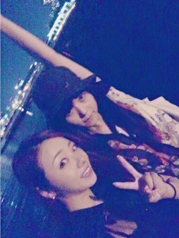

お疲れ様です。
今日はどんな日だったかな？
明日は七夕だね。何お願いしようかな～，ちょっと考えてから寝よう♡
海。
今日じゃないんだけど，休日を万理華と過ごしてたよ。 で「海行きたい」「よし、行こう」ってなって行ってきたよ～。
やっぱこの時期の夜の海は最高。
風が気持ちいいよ～ クラゲ見つけて動画とって 砂浜に座ってたらあっとゆーまに時間が過ぎてたぁ。
ちなみにピンヒールを履いて行ったのは本当に失敗。 だって急遽だったから。 これからはビーサンを持ち歩こう 笑
又々 暗い所の写真だから画質がねぇぇ。笑笑

あ、そーいやさ、昨日のblogに「ハルジオンの衣装」って言いながら「今話したい誰かがいる」の衣装載せてたんだよね。笑
教えてくれた皆ありがとう。
こーゆ所だよね、私のダメな所 笑
こんな私だけどよろしくお願いします...(・ω・)ノ♡
それと嬉しかったこと...
Mr.Childrenの桜井和寿さんが乃木坂46の「きっかけ」をlive中にカバーしてくださりました！！！ 聴きたい！！ 桜井さんの声大好きなんですよ！ 携帯にも歌入れてますし！ 絶対やばいも思う。。 聴きたい♡
桜井さんこのblog見てないと思いますが、ありがとうございます！！！！！！
おやすみなさい。